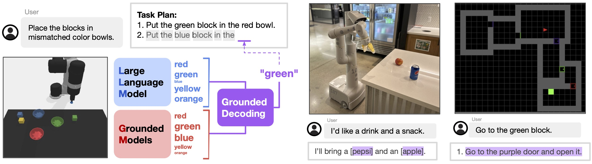

Grounded Decoding:
Guiding Text Generation with Grounded Models for Robot Control
- Wenlong Huang
- Fei Xia
- Dhruv Shah
- Danny Driess
- Andy Zeng
- Yao Lu
- Pete Florence
- Igor Mordatch
- Sergey Levine
- Karol Hausman
- Brian Ichter
 Robotics at Google
Robotics at Google Abstract
Recent progress in large language models (LLMs) has demonstrated the ability to learn and leverage Internet-scale knowledge through pre-training with autoregressive models. Unfortunately, applying such models to settings with embodied agents, such as robots, is challenging due to their lack of experience with the physical world, inability to parse non-language observations, and ignorance of rewards or safety constraints that robots may require. On the other hand, language-conditioned robotic policies that learn from interaction data can provide the necessary grounding that allows the agent to be correctly situated in the real world, but such policies are limited by the lack of high-level semantic understanding due to the limited breadth of the interaction data available for training them. Thus, if we want to make use of the semantic knowledge in a language model while still situating it in an embodied setting, we must construct an action sequence that is both likely according to the language model and also realizable according to grounded models of the environment. We frame this as a problem similar to probabilistic filtering: decode a sequence that both has high probability under the language model and high probability under a set of grounded model objectives. We demonstrate this guided decoding strategy is able to solve complex, long-horizon embodiment tasks in a robotic setting by leveraging the knowledge of both models.
Video Walkthrough
Method Overview

Given a free-form language instruction, a language model and grounded models jointly decide the next candidate token to be decoded by combining their respective likelihood. Language model proposes likely tokens that produce goal-directed and coherent long-horizon behaviors, while grounded models connect them to the physical scene, through a flexible composition of multiple objective functions, such as affordance, preferences, and safety, that can be independently obtained. The figure shows an example of applying Grounded Decoding with beam search for decoding the language model to generate an action plan.
Comparison to SayCan. This work is closely related to SayCan, which uses an LLM and affordance functions to select among a pre-defined set of primitives. This pre-defined set of primitives enables SayCan to use the so-called “scoring-mode” of the LLM to calculate the probability of the textual representation of the primitive in relevance to the high-level task. This requirement of exhaustive enumeration of all possible primitives limits the applicability of SayCan in scenarios with many possible skills, such as open-vocabulary or combinatorial tasks, which GD handles naturally through its flexible and expressive token-level grounding.
Simulated Tabletop Rearrangement
In the simulated tabletop rearrangement domain, we show that Grounded Decoding can enable language models to condition on the physical scene to generate grounded action plans. All plans are generated with affordance grounding. For task "pack me a picnic box", the plan is generated additionally with safety grounding (avoid touching the knife) and preference grounding (choosing cupcake and orange which are pre-specified as preferred objects).
Task: Stack only the blocks of cool colors.
Step 1: Pick up blue block and place it on green block.
Step 2: Pick up cyan block and place it on blue block.
Step 3: Done.
Task: Pack me a picnic box.
Step 1: Pick up cupcake and place it on picnic box.
Step 2: Pick up orange and place it on picnic box.
Step 3: Done.
Task: Separate the vowels from the remaining letters.
Step 1: Pick up A and place it on bottom side.
Step 2: Pick up I and place it on bottom side.
Step 3: Pick up O and place it on bottom side.
Step 4: Done.
Real-World Kitchen Mobile Manipulation
In the real-world kitchen mobile manipulation domain, we show that Grounded Decoding with open-vocabulary object detection can help resolve ambiguous queries with grounded chain-of-thought. The underlined characters (including close brackets) are decoded with Grounded Decoding, where the open brackets are generated by the language model alone (i.e., the language model decides when/where to ground itself when the query is ambiguous). Unlike the simulated tabletop domain, we follow SayCan's implementation for decoding action plans. For details, please refer to the paper.
Robot: I am a robot that can bring objects to you.
Human: I want a soda that is not coke, and a fruit.
Robot thought: I will find the [pepsi] and the [apple]
Robot plan: 1. Find a pepsi
2. Pick up the pepsi
3. Bring it to you
4. Find an apple
5. Pick up the apple
6. Bring it to you
7. Done
Minigrid 2D Maze
In the Minigrid 2D Maze domain, we similarly leverage affordance grounding to show how Grounded Decoding can generate long-horizon action plans.